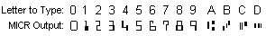
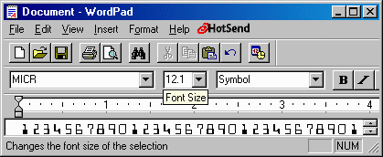

IDautomation.com MICR E13B Font Advantage
Package DEMO
|
A license is required for each computer this
software is installed on;
this software may only be used according to the
License Agreement.
Demo versions of this software may be used for
evaluation purposes only |
This package contains an evaluation version of the MICR font used to print the
magnetic encoding on checks and drafts. While the MICR font in TrueType form is
scalable, it can only be recognized by banks if you print it at 12
points.
This demo MICR font should only be used for testing and evaluation
purposes because it does not contain the number "5".
To order the fully functional MICR font containing all numbers, please
visit: http://www.bizfonts.com/
or
click here to purchase now.
When
you order the font, we will also include MICR placement instructions that tell
you exactly where to print the fields on MICR checks as well as a VB source code
example.
INDEX:
Report Software Piracy: See our document about how
to identify and report illegal and counterfeit barcode fonts for more
information.
The MICR E13B font is a special font that is used on bank
checks and drafts in the United States, Canada, Puerto
Rico, Panama, UK, and a few other countries to print MICR
characters for magnetic recognition and optical character
recognition systems. The MICR E13B font contains ten
specially designed numeric characters 0 through 9, and
the four special symbols: transit, amount, on-us, and
dash. The MICR CMC-7 font is a special font that is used
on bank checks in Mexico, France, Spain and most Spanish
speaking countries. For information on the CMC-7 font visit the
CMC-7 MICR Font Site.
- Created Directly From ISO Specifications - the MICR E13B fonts were created according to ISO (International Standards
Organization) specifications for E13B MICR. The MICR
E13B fonts also comply to strict ABA and ANSI standards
and have been in use for over three years in Draft Creator and other
check printing software programs. These MICR fonts have been proven to
pass the ABA banking standards in the USA for bank checks
and bank drafts. The MICR fonts have been tested on several MICR readers
and sorters including the UNISYS DP500 and the IBM 3890.
- Visual Basic Source Code - we now include Visual Basic source code with your order. The VB source
code has been extracted from a working check printing application and it should give you ideas and guidance
for automated methods of printing bank checks using our MICR E-13B font.
- Peachtree Compatibility - some accounting packages (such as Peachtree Complete Accounting version
8 or greater) allow the use of our MICR fonts on custom check forms. If
your accounting package has this capability, you can save on check
printing and streamline the check printing process.
- Easy to use - the following is sample
code from Visual Basic that selects the MICR font and
size.
Printer.FontName =
"IDAutomationMICR"
Printer.CurrentX = 1500
Printer.CurrentY = 3000
Printer.FontSize = 12
Printer.Print variable
- Embedding Support - the embedding support of our MICR fonts enables embedding in special PDF
document applications such as Adobe Writer, Distiller, PDF Lib and FOP TTF
Reader. This level of embedding also supports creation of OpenType and
TrueDoc fonts for webpages. More
about internet fonts...
- Multiple Formats Provided - when you purchase a license for this font, you will receive all versions
in a single ZIP file. The manual is supplied in a file named
"readme" in the ZIP file. The following fonts are included:
- The
Windows TrueType fonts supplied, are
compatible with all versions of Microsoft Windows, including Pocket PC,
greater than version
3.1 and all versions of Macintosh OS greater than 10.1 (OS X).
- Macintosh Classic TrueType fonts are supplied in MacBinary format
and are compatible with
System 7.1 to the latest version of System 9 OS.
- PostScript Type 1 fonts are supplied in binary,
ASCII and Macintosh Classic MacBinary versions.
- Also included in this package are 300 and 600 DPI PCL fonts.
- With the purchase of a Developer License and 1 year of support and
upgrade protection, we can convert fonts from this package to PCL 4,
Xerox Metacode, XES, FNT, BDF, FON and AFP. More about this is
provided here.
The Developer License also grants you the right to convert our fonts
to other formats as necessary including TrueDoc and OpenType.
- You may also get more information on what
font
types are provided.
- For
the most up to date installation procedures for
other operating systems, please visit our
Technical
Support Site.
- Several font names are provided in the purchased version (click here to purchase now)
to support different print environments:
| Font Name |
Purpose |
| IDAutomationMICR |
The normal MICR font that will produce the
correct MICR representation on most laser printers. |
| IDAutomationMICRB10 |
A bold version provided to support printers
that print slightly lighter than normal. |
| IDAutomationMICRL15 |
A lighter version provided to support
printers that print slightly darker than normal. |
| IDAutomationMICRN1 |
Narrow version to support printers that
print slightly wider than normal. |
| MICR |
Fonts named MICR and E-13B are the same
as IDAutomationMICR and are provided to support applications that require these
specific names. |
| E-13B |
NOTICE: The MICR font should be printed at 12
points with a high quality 300 DPI or greater resolution printer. To create the correct output for the font, you will need to choose the font
in your application and type in the corresponding letter.

To install the TrueType fonts in Windows, run the INSTALL.EXE program or perform the
following for manual installation:
- Click on Start, Select settings and click on Control
Panel.
- Click on Fonts, Click on File in your main tool bar,
Select Install New Font.
- Select the folder where you placed the barcode fonts.
- The fonts will appear and look like this:
FontName (true type) - select the fonts you want to install and
choose OK.
- Click Start and choose to shut down and restart your
computer.
- The font should be active when you restart your computer.
Installing the fonts on Macintosh OS X:
- Drag or copy and paste the TrueType font file(s) ending in TTF
to the Library/Fonts folder.
- To activate the fonts, restart the application - some applications may
require you to restart the computer.
- The font should now be active in the font menu of your application.
To install the TrueType font on the
Classic Macintosh (OS 7.1 - OS 9):
- Download and install Stuffit Expander on your Macintosh if you do not have
an expander utility that can open ZIP files and decode MacBinary files.
- Open the ZIP distribution file that contains the fonts by dragging the ZIP file
on the Stuffit Expander icon. The font files will be extracted from the ZIP
distribution file and will appear in a subfolder of the folder you placed
the ZIP file in. Open this subfolder to view the font files. At this
point, you may want to view the documentation supplied with the font files.
To do so just drag the file "readme.html" to the Netscape or
Internet Explorer icon.
- Now we must decode the files from MacBinary format. Drag the font files
that you wish to use that
end with "mtt" to the Stuffit Expander icon.
- Drag the decoded font files to the System - Fonts
folder.
- Restart the application you wish to use the font with.
- The font will be active in the font menu of your application.
- To create the correct output for the font, you will need to choose the font
in your application and type in the corresponding letter.
Font
installation procedures for other operating systems are provided here
The following is a list of known problems that can occur
when printing MICR. In any MICR project, you should verify the following:
- Verify the correct horizontal and vertical placement of the MICR E13B
font symbols and their fields. You should compare your MICR font
output to our MICR font placement guidelines document or obtain the MICR
Printed Image Specifications from the American Bankers Association. This
process is simplified if you are using check stock with a light square box
near the bottom; align the first bank routing or transit symbol in the box.
- Verify that you are printing with MICR toner. Some banks now use
OCR (Optical Character Recognition) to read the MICR font line on checks and
regular laser toner is somewhat magnetic, however, you must use MICR toner
to conform to the ABA standards. Click
here to view the MICR Toner website where you can order MICR toner
for your printer. If your checks come back from the bank with little white
slips attached to the bottom of them, then the bank had a problem reading
the MICR line and if the MICR line was aligned properly, it is usually a
MICR toner problem.
- Character spacing issues - One problem that some have is that
the MICR font will print about (1 to 2%) wider or narrower on some printers,
paper and under certain humidity conditions, although this will not usually
cause a MICR read error. To ensure this does not cause the MICR to get out
of alignment, programmers should design their software so that the MICR
fields, such as the transit number and account number, print independently
instead of one long string of characters. If you are using PCL fonts,
character spacing can be adjusted by setting the HMI for the printer
whenever the MICR font is selected. MICR should be printed as close to 8 CPI
as
possible. If you are using TrueType or PostScript fonts, you may be able to
"fine tune" your font point size, if your application allows it. In
the example on the right side, we changed the point size to 12.1 to make the
font slightly wider. To do this, we selected the MICR font string and then
entered "12.1" in the font point size window and pressed enter. In
Visual Basic, the point size can be adjusted within 1/100 of a point by
changing the FontSize property as in this example, where we needed to make
the font slightly narrower:
Printer.FontSize = 11.95
- Irregular character / stroke width errors - if these errors are
received, try using the bold version of the MICR font instead of the normal
version. The bold version of the TrueType font is "IDAutomationMICRB10".
When reported, this type of issue was the result of strict MICR test
equipment reports, although this did not cause a MICR read error with bank
reading equipment, except under conditions when printers were printing
lighter than normal.
- For all other font issues, please go to our primary
technical support site.
The following font types are included with the IDAutomation.com, Inc. font
set:
NOTE: Unless you are sure you need to use a MICR
font that is different, use the standard MICR font named "IDAutomationSMICR" in your application.
IDAutomationSMICR is the normal MICR font that will produce the correct MICR
representation on most laser printers. Fonts named MICR and E-13B are only
provided in the purchased version to support applications that require these
names.
IDAutomationSMICRB10 Fonts
Font files that include "B10" in the file name and font name are
approximately 10% bolder that the standard version. The bold versions are
provided to support printers that print slightly lighter than normal. These
are not normally used.
IDAutomationSMICRL15 Fonts
Font files that include "L15" in the file name and font name are
approximately 15% lighter that the standard version. The lighter versions are
provided to support printers that print slightly darker than normal. These are
not normally used.
IDAutomationSMICRN1 Fonts
Font files that include "N1" in the file name and font name are
approximately slightly narrower that the standard version. The narrow versions
are provided to support printers that print characters slightly wider than
normal. These are not normally used.
Copyright © 1999-2003 IDAutomation.com, Inc. All trademarks
are the property of their respective owners.